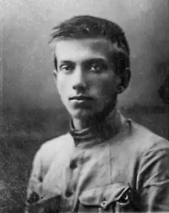
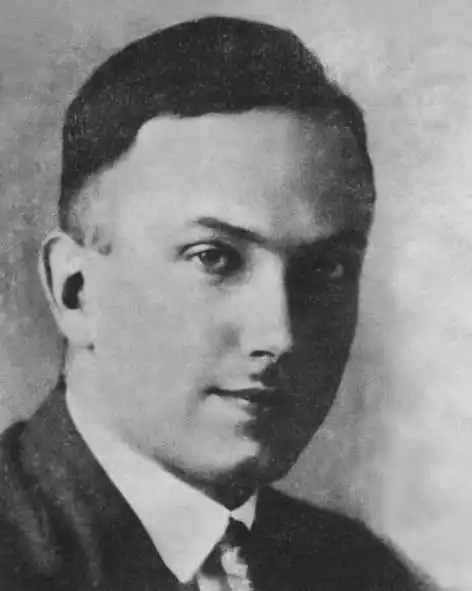

Юрій Іванович Липа — український громадський діяч, письменник, поет, публіцист, лікар, автор української геополітичної концепції. Один з ідеологів українського націоналізму. Вважається одним з провідних українських філософів першої половини ХХ століття.
Відповідно до українського законодавства може бути зарахований до борців за незалежність України у ХХ сторіччі.
Батьком Юрія був видатний український письменник, лікар і борець за самостійність України Іван Липа — комісарОдеси від Центральної Ради (1917), міністр культів і віросповідань Директорії УНР та автор проекту її першої Конституції (1918), міністр здоров'я уряду УНР в екзилі (1921). Початкову освіту майбутній письменник здобув у гімназії № 4 м. Одеси. Тут же вступив до Новоросійського університету. У 1917 р. молодий юнак робить свої перші кроки на літературній ниві — він є редактором часопису "Вісник Одеси", пише свої перші брошури: "Союз визволення України" (історія і діяльність), "Королівство Київське за проектом Бісмарка", "Носіть свої відзнаки", "Гетьман Іван Мазепа", які побачили світ у заснованому батьком видавництві "Народний стяг". Тоді ж, з огляду на загрозу більшовицького перевороту в м. Одесі, вступає до лав організованої полковником І. Луценком та підполковником В. Змієнком Гайдамацької дивізії, у перший курінь. Пізніше вступив до куреня Морської піхоти Збройних сил УНР, бере участь у січневих боях з більшовиками на вулицях Одеси. Після вступу у місто союзних німецько-австрійських та українських частин Юрій Липа стає заступником командира одеської "Січі" Т. Яніва. В той час він редагує українську щоденну газету, видає останню, написану в Одесі, книжку "Табори полонених українців". Вступивши 1922 р. до Познанського університету на медичний факультет, він не полишає громадсько-політичної діяльності. Зі студентів, колишніх вояків армій УНР і ЗУНР, за почином хлопця утворюється таємне товариство, корпорація "Чорноморе", де Юрій Іванович обіймає посаду ідеологічного референта. В умовах бездержав'я українські емігранти, очолені Юрієм Липою, намагалися не лише зберегти своє національне обличчя, але й думали про майбуття України. Разом з Юрієм Івановичем плідно працює на літературній ниві, здебільшого з суспільно-політичної тематики. В численних виданнях з'являється друком перша поетична збірка Юрія Липи – "Світлість", одразу помічена критиками, які пророкували авторові велике майбутнє. По закінченні університету у 1929 році разом з Є. Маланюком Юрій стає натхненником і організатором літературної групи "Танк". Друкувався в альманасі "Сонцецвіт". Велика віра у вищу ідею України, її традиції, духовні сили, орієнтація на Європу, праця над власним стилем, боротьба з провінційністю, малоросійським шароварництвом і сльозливою ліричністю — ось основні гасла і принципи, за якими творили молоді письменники. Пройнята цими ідеями, переповнена духом боротьби за українську ідею, з'являється 1931 р. друга збірка поезій Юрія Івановича з такою характерною назвою — "Суворість". На шпальтах "Вісника" друкуються його літературознавчі статті: "Розмова з порожнечею", "Розмова з минулим", "Совіцькі фільми", "Розмова з наукою", "Організація почуття", "Боротьба з янголом", "Розмова з Заходом", "Селянський король", "Сатриз Мапіпз", "Провідництво письменства", "Батько дефетистів", "Сіре, жовте і червоне", в яких він дає оцінку українській літературі та визначає головні напрямки її розвитку в майбутньому. У Варшаві в 1934 р. вийшов друком роман письменника: "Козаки в Московії". Наступного року він познайомив читача зі збіркою літературознавчих есе під назвою "Бій за українську літературу". Юрію вдалося досягти дивовижної цілісності у виявленні цінностей української культури та накреслити у глобальному плані проблеми і завдання, які стоять перед нею у майбутньому як перед культурою незалежної України — перлини світової цивілізації. 1936 року Юрій Липа видав три томи новел "Нотатник" на тему національно-визвольних змагань 1917—1921 років. Героїчний характер інтелігента масштабно й глибоко виписано, зокрема, в новелах "Кам'янець столичний" та "Гринів". Письменнику вдалося створити образ героя нового типу — інтелігента, безмежно відданого ідеї, цілеспрямованого й діяльного. Персонажі письменника — люди витонченої душевної організації, високого інтелекту, природні провідники, герої європейські, а водночас — типові представники свого народу. До того ж, у тому ж році письменник видав дві політичні праці — "Українська доба" й "Українська раса", в яких проаналізував політичні доктрини Європи XX століття. Найповніше ідейно-філософські погляди Липи розкриті в його "всеукраїнській трилогії" — "Призначення України" (1938), "Чорноморська доктрина" (1940) та "Розподіл Росії" (1941). В цих працях Юрій Липа виступає як теоретик сучасної української геополітики. У вкрай несприятливий час воєнного лихоліття Юрій Липа разом із Левом Биковським та Іваном Шовгенівим у 1940 році утворюють у Варшаві Український Чорноморський інститут — науково-дослідну установу вивчення політичних і економічних проблем, що постануть перед Україною після здобуття незалежності. Протягом 1940—1942 років ними було видано 40 актуальних праць. Мрією вчених було після відновлення Української держави перенести Український Чорноморський інститут до Одеси, щоб він став потужним центром наукових досліджень у багатьох галузях. 3 цією метою Юрій Липа 1942 року приїздив до Одеси, навіть зумів організувати видання декількох наукових збірок. Проте війна не дала змоги довершити задумане. Після переїзду влітку 1943 до Яворова (тепер Львівська область) став одним з активних учасників українського руху Опору. Працюючи як лікар, Липа організував підпільні курси по підготовці медичних кадрів для Української Повстанської Армії, готував тексти листівок та відозв до населення і німецьких солдат. Постать Юрія Липи була настільки значущою, що 1943 р. його діяльність помітили у вищому державному проводі фашистської Німеччини. За наказом Гітлера Ю.Липу було перепроваджено до Берліна, тому що, на думку правителів Німеччини, він був найбільшим українським ідеологом-державником. Йому було запропоновано очолити маріонетковий уряд України. Однак Юрій з гідністю відкинув цю ганебну пропозицію. І, на диво, залишився живим… З липня 1944 – інструктор першої Старшинської школи УПА в Карпатах. Помітили його і радянці, з лабет яких вирватись мислителю не поталанило. 19 серпня 1944 Юрій Іванович був захоплений підрозділом НКВС в селі Іваники, Яворівського району, а на світанку 20 серпня 1944 р. Юрія Липу було по-звірячому замордовано в с. Шутова Яворівського району, що на Львівщині. Похований в с. Бунів, Яворівського району.